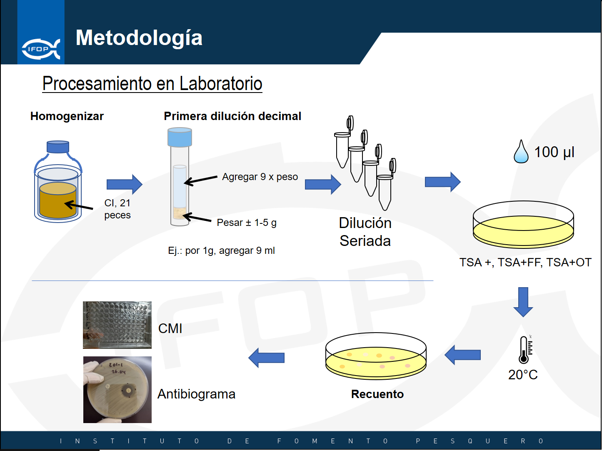

Evaluacion_crvalenz
Protocolo recuento bacteriano desde muestras de contenido intestinal
Protocolo para la obtención de recuento de bacterias recuperables, a partir de contenido intestinal de salmon.
Protocolo
- Recolectar muestras de heces de salmón (21 peces) en contenedor un estéril (bolsa estéril tipo Whirl-Pack 13x19 cm).
- Almacenar las muestras a 4°C y transportar a laboratorio.
- En laboratorio, homogenizar la muestra a fin de mezclar las heces de los distintos peces muestreados.
- Tomar entre 1 a 5 g de muestras de heces y transferir a contenedor estéril nuevo (tubo cónico de 15 o 50 ml dependiendo de la cantidad de muestra a usar).
- Agregar un volumen de solución salina estéril (NaCl 0,9%) igual a nueve veces el peso de la muestra (ej.: para 5 g de muestra agregar 45 ml de Solución salina, por 4,3 g de muestra agregar 38,7 ml de solución salina).
- Homogenizar por agitación y el contenedor con la muestra diluida. En este punto, la muestra se encuentra diluida diez veces (dilución -1).
- Realizar 5 diluciones decimales seriadas en solución salina.
- Antes de inocular las muestras, secar las placas por 15 minutos en condiciones de esterilidad (las placas pueden ser dejadas abiertas dentro de un gabinete de bioseguridad funcionando).
- Con las diluciones -5, -4 y -3, inocular placas de TSA2.
- Con las diluciones -5, -4 y -3, inocular placas con TSA2 con Florfenicol (30 µg/mL).
- Con las diluciones -3, -2 y -1 inocular placas con TSA2 con Oxitetraciclina (30 µg/mL).
- Inocular con 0,1 ml de cada dilución, en triplicado, diseminando la muestra con rastrillo de vidrio o asa Digralsky esterilizada previamente (flamear el rastrillo de vidrio con alcohol entre cada placa). Diseminar la muestra hasta que esta se absorba completamente (al absorberse la muestra observará un poco de resistencia para pasar el restrillo por el agar).
- Cada dilución debe sembrase en triplicado en cada uno de los distintos medios utilizados.
- Incubar las placas a 20°C por hasta 5 días, revisando el desarrollo de colonias diariamente.
- Hacer recuento del número de colonias en aquellas placas que tengan entre 30 a 300 colonias, en el equipo SCAN 500, dejando registro de las placas procesadas.
- Informar resultado en ufc/g.
Esquema

Referencia Bibliográfica
Miranda CD. y Rojas R. (2007). Occurrence of florfenicol resistance in bacteria associated with two Chilean salmon farms with different history of antibacterial usage. Aquaculture 266, 39–46.